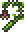

Vine
| Vine | |
|---|---|
| | |
| Statistics | |
| Type | Crafting material |
| Max stack | 99 |
| Sell | 2 |
- For the environmental Vines that grow and hang from dirt, see Vines.
Vines are a Man Eater drop in the Underground Jungle Biome. They are used to craft the Ivy Whip and Jungle Pants.
A great way to farm Man Eaters is to find a chain of horizontal caves in the jungle and dig a long passage between them, and then make two rows of Wood Platforms. While running between the platforms the chance of spawning a Man Eater will increase. If any Hornets spawn, simply smack them up into the air, and they will not be able to pass down through the platform.
Crafting
Used in
| Result | Ingredients | Crafting Station | |
|---|---|---|---|
|  | Ivy Whip | Jungle Spores(12) | |
| Vine(3) | |||
| Grappling Hook(1) | |||
| Jungle Pants | Jungle Spores(8) | ||
| Vine(2) | |||
| Amethyst(1) | |||
| Topaz(1) | |||
History
- Pre-Release: Introduced.